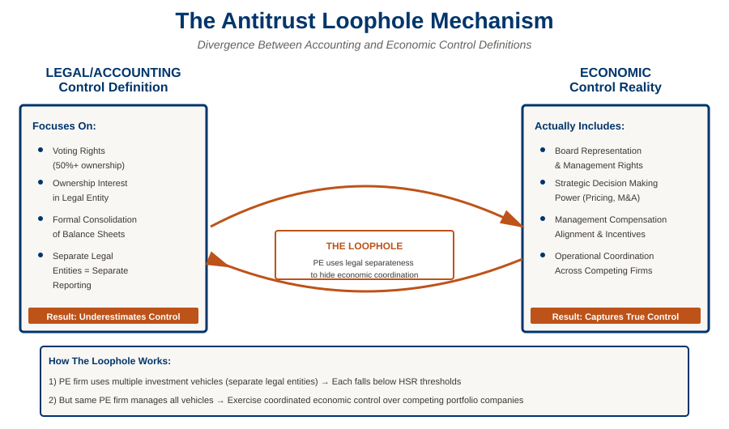

Abstract
We examine how private equity (PE) firms exploit divergences between accounting and economic measures of control to avoid triggering antitrust scrutiny. When PE firms acquire multiple competitors within the same industry, they often structure transactions to maintain formally separate operating units while exercising significant economic control over pricing and strategic decisions.
Our analysis reveals that accounting-based control measures—which focus on voting rights and formal ownership structures—systematically underestimate the economic control that PE firms exercise over portfolio companies. This measurement divergence creates an antitrust loophole: PE firms can coordinate substantially competitive behavior across portfolio companies while technically maintaining separate entities that escape consolidation-based competition metrics.
Key Findings
Control Measurement Gap
Accounting control measures diverge substantially from economic control when PE firms exercise influence over portfolio company operations through informal channels and management rights.
PE Operational Control
PE firms actively exercise operational control over portfolio companies through board representation, management compensation, and strategic oversight—control not fully captured in accounting consolidation metrics.
Regulatory Implications
Current antitrust frameworks rely on accounting-based control definitions that fail to capture economic realities of PE influence, creating opportunities for coordinated behavior across formally separate competitors.
Antitrust Evasion
PE firms can maintain formal independence and separate legal entities for multiple competitors while exercising effective economic control, enabling coordinated behavior that avoids consolidation-based antitrust trigger thresholds.
Key Results
Our analysis combines transaction-level merger data with filing information to quantify the extent of PE-backed acquisitions that escape notification requirements. The figures below illustrate the explosive growth in PE deal activity, the systematic underreporting of PE transactions, and the fundamental misalignment between legal and economic definitions of control.

Regulatory Mechanism
The core issue identified in this paper is a fundamental misalignment between how the Hart-Scott-Rodino Act defines control (based on voting rights and legal ownership) and how control actually operates in private equity structures (based on management authority, board representation, and strategic decision-making rights). The figure below illustrates this divergence and shows how PE firms exploit this gap to evade antitrust scrutiny.

Research Contribution
This paper highlights a critical gap in antitrust enforcement frameworks. By documenting how PE firms exploit divergences between accounting and economic control measures, we show that current merger control and consolidation definitions may systematically miss competitive harms in PE-backed portfolios.
Our findings suggest that antitrust authorities should expand their focus beyond formal ownership and consolidation metrics to account for actual economic control. This requires examining operational coordination, management alignment, and economic incentive structures—factors that accounting-based measures miss but that substantially affect competitive outcomes.